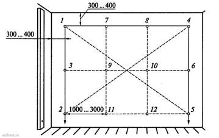
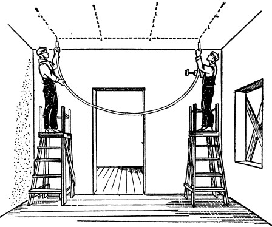

Последовательность провешивания стен:
1) в верхнем левом углу на расстоянии 30...40 см от потолка и лузга забивают гвоздь 1. Шляпка гвоздя должна отставать от стены на толщину штукатурки (можно принять это расстояние за 2,5 см);
2) от шляпки гвоздя на шнурке опускают отвес. Внизу забивают гвоздь 2. Шляпка гвоздя отстает от поверхности на расстояние, на которое шнурка отвеса отстает от стены, когда отвес находится в спокойном состоянии;
3) если поверхность имеет высоту более 2,5 м, то забивают промежуточный гвоздь 3;
4) в правом углу в той же последовательности и на таком же расстоянии от угла и потолка забивают гвозди 4, 5 и 6;
5) забив крайние гвозди, проверяют ровность всей поверхности. Для этого натягивают шнурку между гвоздями 1 и 4, 2 и 5;
6) если шнурка касается стены, то необходимо гвозди немного вытащить из стены, чтобы между выпуклостью стены и шнур-кой было пространство, равное толщине штукатурки;
7) расстояние между гвоздями должно составлять 1...3 м, поэтому при большой длине поверхности по натянутым шнуркам забивают гвозди 7 и 8, 9 и 10, 11 и 12. Промежуточные гвозди забивают по одной прямой - друг под другом;
8) можно проверить точность поверхности, натянув шнурку по диагонали между гвоздями 1 и 5, 4 и 2.

Потолки провешивают уровнем с правилом длиной до 3 м, ватерпасом водяным уровнем. До провешивания необходимо проверить точность плоскости потолка. Провешивание следует начинать с самого выпуклого места, в которое вбивают гвоздь. До начала провески на потолке лучше всего отбить линию расположения маяков, по которой затем набивают гвозди.
Провешивают потолок водяным уровнем по гвоздям, вбитым на определенном расстоянии один от другого. Один гвоздь является постоянным, остальные устанавливают по первому. Если плоскость провешенного потолка горизонтальна, то вода в трубках будет стоять на одних и тех же делениях, когда концы стеклянных трубок приставляют к шляпкам вбитых гвоздей.
